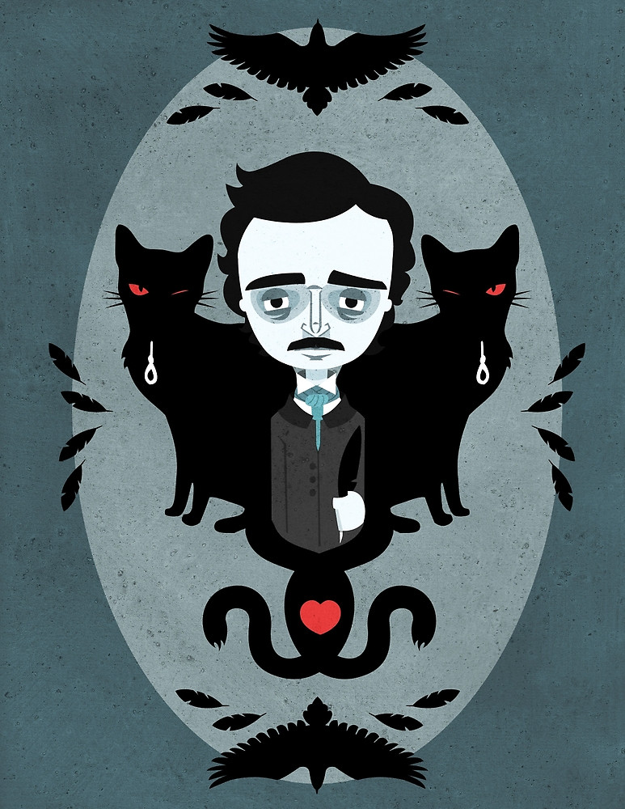

Edgar Allan Poe era hijo de Elizabeth Arlold Poe y David Poe, actores ambulantes de teatro, quienes lo dejaron huérfano a los dos años. Fue educado por John Allan, un acaudalado hombre de negocios de Richmond, y de 1815 a 1820 vivió con éste y su esposa en el Reino Unido, donde comenzó su educación. Los Allan acogieron al niño, pero nunca lo adoptaron formalmente aunque le dieron el nombre de "Edgar Allan Poe".
Después de regresar a los Estados Unidos, Edgar Allan Poe siguió estudiando en centros privados y asistió a la Universidad de Virginia, pero en 1827 su afición al juego y a la bebida le acarreó la expulsión. Abandonó poco después el puesto de empleado que le había asignado su padre adoptivo, y viajó a Boston, donde publicó anónimamente su primer libro, Tamerlán y otros poemas.
Se enroló luego en el ejército, en el que permaneció dos años. En 1829 apareció su segundo libro de poemas, Al Aaraf, y obtuvo, por influencia de su padre adoptivo, un cargo en la Academia Militar de West Point, de la que a los pocos meses fue expulsado por negligencia en el cumplimiento del deber.
La miseria y el hambre lo acompañaron, por motivos económicos pronto dirigió sus esfuerzos a la prosa, escribiendo relatos y crítica literaria para algunos periódicos de la época; llegó a adquirir cierta notoriedad por su estilo cáustico y elegante. Debido a su trabajo, vivió en varias ciudades: Baltimore, Filadelfia y Nueva York. En Baltimore, en 1835, contrajo matrimonio con su prima Virginia Clemm, que contaba a la sazón 13 años de edad. En enero de 1845, publicó un poema que le haría célebre: "El cuervo". Su mujer murió de tuberculosis dos años más tarde. Aún hundido en la desolación, el autor terminó, en 1849, el poema "Eureka". Con la muerte de Virginia, la vida de Poe se vino abajo.
Falleció el 7 de octubre de 1849. Sus últimas palabras fueron "que dios ayude a mi pobre alma".
